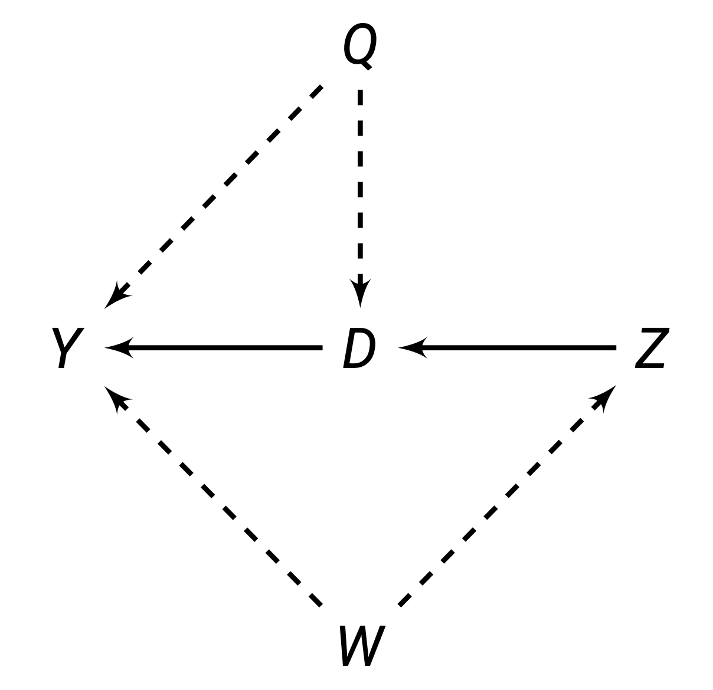
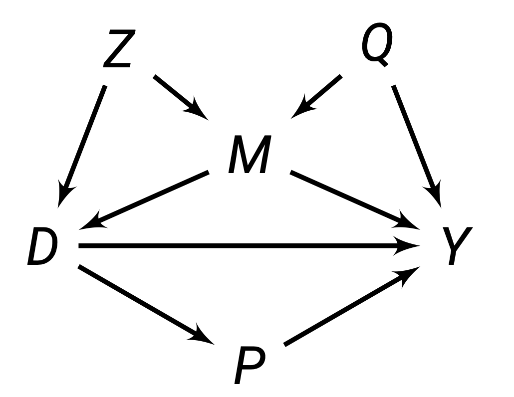
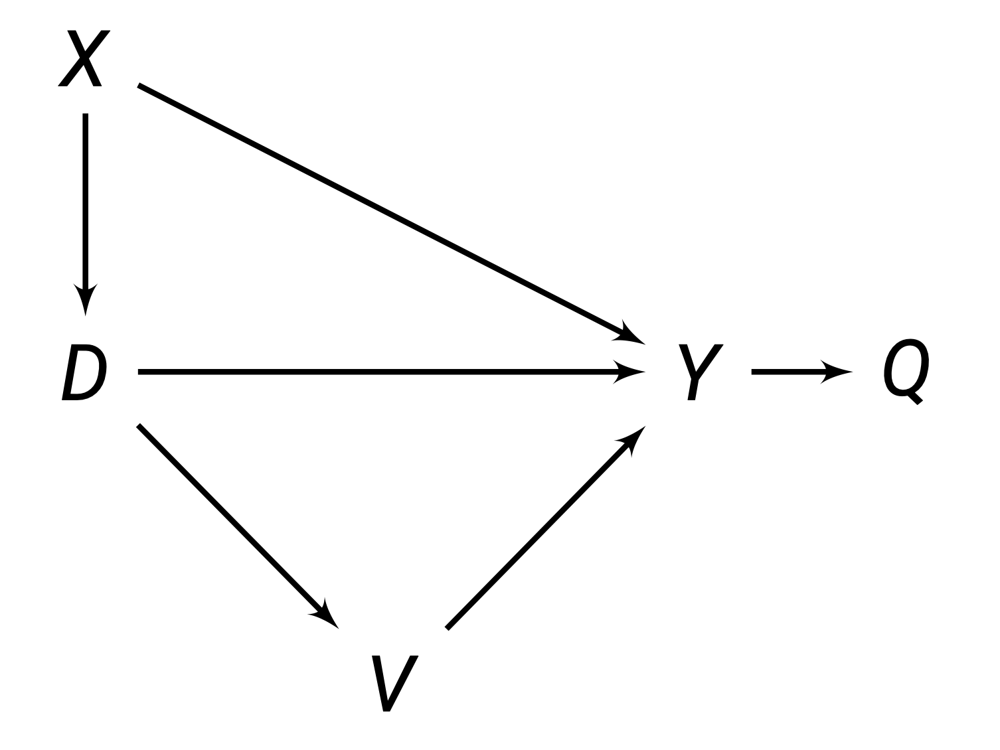
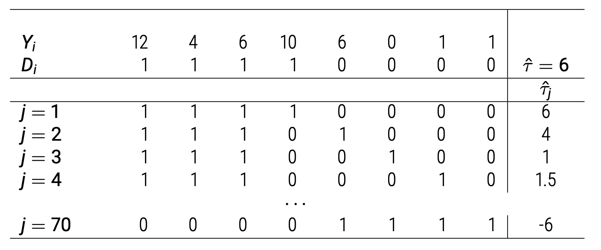
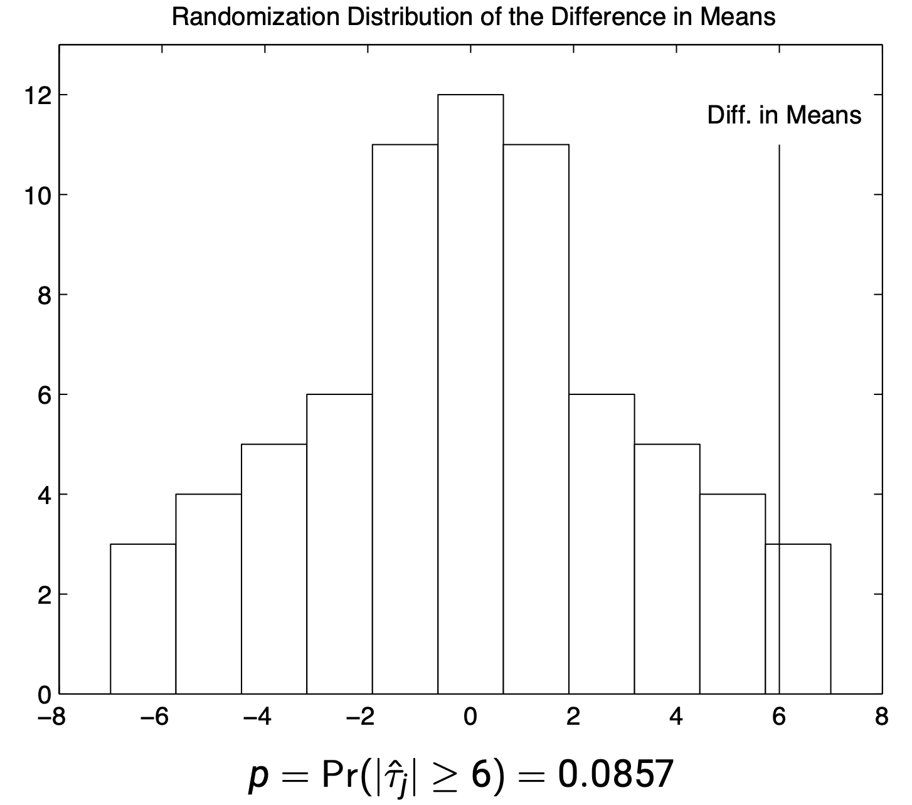

7 Causal Inference
So far, we have introduced multiple estimators to help estimate parameters that describe the relationships between variables.
In this chapter, our goal is to go from relationships/correlation to causation. First, we introduce the popular causal frameworks and causal estimands. Then, we discuss the issue with selection bias, and why correlation is not causation. Finally, we discuss randomisation as a method to establish causality.
7.1 Potential Outcomes Framework
A lot of social science and science is about understanding the causes of things. This involves understanding how some treatment variable \(D\) causes some outcome variable \(Y\). We call our treatment variable \(D\). For each unit \(t\), they have a treatment status of \(D_t\):
\[ D_t = \begin{cases} 1 & \text{if unit t received the treatment} \\ 0 & \text{if unit t did not receive the treatment} \end{cases} \]
Now, imagine that there are two parallel worlds. In one of these parallel worlds, unit \(t\) receives the treatment \(D_t = 1\). In the other parallel world, unit \(t\) does not receive the treatment \(D_t = 0\). Everything about these two parallel worlds besides \(D_i\) is identical. The outcome \(Y\) value in these two worlds is called the potential outcomes.
Definition 7.1 (Potential Outcomes) The potential outcomes \(Y_t(d)\) for unit \(t\) are the \(Y\) values in the two identical parallel worlds besides the \(D_t\) value.
\[ Y_t^{(d)} = \begin{cases} \pt & D_t = 1\text{ parallel world outcome Y value for unit t} \\ \pc & D_t = 0\text{ parallel world outcome Y value for unit t} \\ \end{cases} \]
To make clear when talking about potential outcomes, I will always highlight them in purple.
The above mentioned potential outcomes framework depends on the stablue unit treatment value assumption (SUTVA).
It basically says that unit \(t\)’s potential outcomes \(Y_t(1)\) and \(Y_{t}(0)\) are not affected in any way by another unit \(j\)’s treatment status \(D_j\). Basically, changing other individual’s treatment status has no effect on an individual’s own outcomes.
If SUTVA is violated, then our nice two parallel worlds example no longer is accurate. This is because if SUTVA is violated, unit \(t\) now has the potential outcomes of themselves receiving \(D_t = 1, 0\), but also other people \(D_j = 0, 1\). This will make the number of outcomes grow massively (especially if multiply other units affect an individual).
Common causes of SUTVA violations include:
- Spill-over effects: If we are testing a new curriculum, one student \(j\) getting the new curriculum may teach their friend \(t\) the new curriculum, which means if student \(j\) got or did not get the new curriculum would affect student \(t\)’s outcomes.
- Dilution: For example, in vaccines, there is herd immunity. That means other people getting the vaccines also improves my health outcomes.
If we know the two hypothetical parallel worlds are identical to each other except for treatment \(D_t\), then we know any difference in \(Y\) outcomes between the two worlds must be a result of treatment \(D\). This difference in potential outcomes is called the individual treatment effect \(\tau\).
Definition 7.2 (Individual Treatment Effect) The individual treatment effect of treatment \(D\) on \(Y\), for a specific unit \(i\), is given by the difference between the potential outcomes.
\[ \tau_t = \pt - \pc \]
However, there is an issue: in the real world, we obviously do not have two hypothetical parallel worlds. We only have one world - either unit \(t\) gets treated \(D_t = 1\) or unit \(t\) does not get treated \(D_t = 0\). The world we actually live in is called the observed outcome, and the parallel world we do not see is called the counterfactual.
Definition 7.3 (Observed Outcomes and Counterfactuals) The observed outcome \(Y_t\) that we actually see for a unit \(t\) can be given by a function of potential outcomes:
\[ Y_t = D_t \cdot \pt + (1-D_i) \cdot \pc \]
If we plug in the treatment status \(D_t = 0, 1\) of unit \(t\) into the above equation, we get observed outcomes
\[ Y_t = \begin{cases} \pt & \text{if} D_i = 1 \\ \pc & \text{if} D_i = 0 \end{cases} \]
The potential outcome that is not observed is the counterfactual outcome.
The fact that we cannot observe the two parallel worlds, and that the counterfactual is never observable in our real world, is called the fundamental problem of causal inference. Our goal in causal inference will be to somehow approximate/estimate these counterfactuals in order to estimate causal effects. To distinguish potential outcomes \(\pt, \pc\) from observed outcomes \(Y_t\), I will notate potential outcomes in purple.
7.2 Causal Estimands
Earlier, we discussed the individual treatment effect \(\tau_t\) from definition 7.2. However, because of the fundamental problem of causal inference, we do not know the counterfactuals.
At an individual level, these counterfactuals are almost impossible to estimate, so we typically do not use the individual treatment effect. Instead, we will typically look at the averages of treatment effects. The most common causal estimand (true value in the population) we will use is the average treatment effect.
Definition 7.4 (Average Treatment Effect) The ATE is the average individual treatment effects \(\tau_i\) in the population.
\[ \tau_{ATE} = \E(\tau_t) \ = \ \E(\pt - \pc) \ = \ \E \pt - \E \pc \]
Obviously, we do not observe the counterfactual outcomes. However, at a group level, their averages are more easily estimated, which we will explore later in the chapter.
The ATE is not the only causal estimand. We will often consider a few other causal estimands.
Definition 7.5 (Average Treatment Effect on the Treated) The ATT is the average individual treatment effect \(\tau_i\) for only units that were assigned to the treatment group \(D_i = 1\):
\[ \tau_{ATT} = \E(\tau_t | D_t = 1) \ = \ \E(\pt - \pc | D_t = 1) \]
The ATT is usually not equal to the ATE, but in specific circumstances, they can be equal.
The opposite estimand also exists - the average treatment effect on the untreated (ATU). This is typically not something we calculate, but it is used in some proofs.
Sometimes, we also might believe there are heterogenous treatment effects - i.e. some third variable strengthens or weakens the strength of an estimand. For example, perhaps a policy has more positive effects on females than males. Thus, we can also find the ATE conditional on some third variable.
Definition 7.6 (Conditional Average Treatment Effect) The CATE is the average treatment effect, conditional on some other characteristic/covariate \(X\) value:
\[ \tau_{CATE}(x) = \E(\tau_t| X = x) \ = \ \E(\pt - \pc|X=x) \]
This estimand is also sometimes called the local average treatment effect (LATE).
These causal estimands are all estimands - true population parameters. Our goal will be to fill in the missing counterfactuals with some identification strategy, in order to estimate these true population estimands.
7.3 Structural Causal Models
An alternative causal framework, pioneered by Pearl, is called the structural causal models. This framework uses graphical models (called directed acyclic graphs) to illustrate causality.

Every causal graph illustrates how different variables are connected to each other. Each graph contains:
- Nodes: These are letters that represent different variables.
- Directed Edges: these are arrows that encode causal theories between the variables. For example, if you believe \(Z\) causes \(D\), you would draw an arrow \(Z \rightarrow D\). These connections are either observable (solid lines) or unobservable (dashed lines).
Paths are any route between any two variables, that do not have to follow the direction of the arrows. For example, in the figure above, between \(D\) and \(Y\), there are 3 paths:
- The direct path \(D \rightarrow Y\).
- The inderect/backdoor path \(D \leftarrow Q \rightarrow Y\).
- The indirect/backdoor path \(D \leftarrow Z \leftarrow W \rightarrow Y\).
The goal in causal inference is to get rid of all the indirect/backdoor paths, allowing us to isolate the direct relationship between \(D\) and \(Y\).
One way to block a path is through an external intervention. For example, in the figure below, variable \(D\) is directly caused by \(M\) and \(Z\). This allows indirect paths between \(D\) and \(Y\) to flow between \(M\) and \(Z\).
However, if we externally decide the value of \(D\) (such as through random assignment of \(D\)), then we are determining the value of \(D\) externally, and \(Z\) and \(M\) will no longer determine \(D\). Thus, the indirect/backdoor paths from \(Z\) and \(M\) will be eliminated.

On the other hand, we can block indirect/backdoor paths through conditioning on a set of variables/nodes \(\set X\). A set of nodes \(\cal X\) blocks a path if one of two is true:
- A path is blocked if our set of conditioning nodes \(\set X\) includes at least one arrow-emitting node within that path.
- A path is blocked if the path contains a collision node (where multiple arrows point into it), and that collision node is not included in our set of conditioning nodes \(\set X\).
For example, in the figure above, we can see:
- The path \(D \rightarrow P \rightarrow Y\) is blocked by a set \(\set X = \{P\}\), since \(P\) is one arrow emitting node within this path.
- The path \(D \leftarrow M \rightarrow Y\) is blocked by a set \(\set X = \{M\}\), because \(M\) is one arrow emitting node within this path.
- The path \(D \leftarrow Z \rightarrow M \rightarrow Y\) is blocked by either \(\set X = \{M\}, \{Z\}\) or \(\{M, Z\}\).
- The path \(D \leftarrow Z \rightarrow M \leftarrow Q \rightarrow Y\) is blocked by an empty set \(\set X = \varnothing\), because \(M\) is a collider node in this path and we do not need to include it.
We will discuss the idea of blocking paths more in the quasi-experimental research designs covered in Part III.
7.4 Selection Bias
You always here the saying - correlation is not causation. But what does that actually mean? A simple model of correlation \(\rho\) is finding how observed \(Y\) changes when \(D\) changes. More specifically, we want to find the differences in conditional expectations (given by definition 1.8) of observed \(Y_t\) values for when \(D_t = 1\) and \(D_t = 0\):
\[ \rho_{D, Y} = \E(Y_t|D_t = 1) - \E (Y_t | D_t = 0) \]Now, let us do some algebra. First, we know that \(Y_t|D_t = 1\) is the observed potential outcome \(\pt\). We also know that \(Y_t|D_t = 0\) is the observed potential outcome \(\pc\). Thus, we can rewrite the above to
\[ \rho_{D, Y} = \E(\pt|D_i = 1) - \E(\pc|D_i = 0) \]
Now, let us do an algebra trick. We know that adding a zero doesn’t change the equality of the equation. Let us add the term \(\E(\pc|D_t = 1)\), but then also subtract that term, so we are essentially adding a 0. Then we get
\[ \begin{align} \rho_{D, Y} = \E(\pt &|D_t = 1) - \E(\pc|D_t = 0) \\ & + \E(\pc|D_t = 1) - \E(\pc|D_t = 1) \end{align} \]
Let us rearrange the order of the terms to get
\[ \begin{align} \rho_{D, Y} & = \overbrace{\E(\pt|D_t = 1) - \E(\pc|D_t = 1)}^{\tau_{ATT}} \\ & \qquad \qquad \qquad \underbrace{+ \E(\pc|D_t = 1) - \E(\pc|D_t = 0)}_{\text{selection bias}} \end{align} \tag{7.1}\]
We can see that according to definition 7.5, the first part of this correlation between \(D\) and \(Y\) is the ATT, one of the causal estimands. However, the correlation \(\rho_{D,Y}\) does not only equal the \(\tau_{ATT}\), as there is an extra bit, the selection bias. If this selection bias is not 0, then our correlation is clearly not equal to our ATT.
Let us look at the selection bias term more carefully:
\[ \underbrace{+ \E(\pc|D_t = 1) - \E(\pc|D_t = 0)}_{\text{selection bias}} \]
The first part is the average potential outcome under parallel world \(D_t = 0\) for the units that were assigned to treatment \(D_t = 1\). The second part is the average potential outcome under parallel world \(D_t = 0\) for units that were assigned to control \(D_t = 0\).
If this term is non-zero, that means the control group and treatment group have different average \(\pc\) values. That means, before our experiment had even started, the control and treatment groups had different baseline potential outcome \(\pc\). If for example, the treatment group \(D_t = 1\) initially had a very low \(\pc\), even after treatment with true effect \(+\tau\), their outcome \(Y_t\) may still be lower than people who didn’t get the treatment. So, our correlation \(\rho_{D,Y}\) would pick up a negative treatment effect, when the actual treatment effect is positive \(+\tau\).
A good intuitive example is the question: does going to the hospital improve your life expectancy? If we were to just collect correlation data, we would see that actually, people who went to the hospital have lower life expectancy.
But, that is because people who go to the hospital in the first place already have low life expectancy \(\pc\) compared to people who didn’t go. The hospital will cause these people with low life expectancy to have longer lives (treatment effect \(\tau\)), but even with \(\pc + \tau\), their life expectancy may still be lower than the \(\pc\) of the group who never went to the hospital.
Thus, our correlation measure shows a negative effect of going to the hospital on life expectancy, when in reality, going to the hospital does boost life expectancy, its just people who choose to go to the hospital start off with lower life expectancy than those who do not go.
7.5 Confounders
The reason for this difference in pre-experiment \(\pc\) is a third variable \(X\) is causing people to go to select treatment \(D\) more frequently, and also has some effect on \(Y\). \(X\) is thus causing selection bias. An \(X\) that causes selection bias is called a confounder.
Definition 7.7 (Confounder) A confounder is a third variable \(X\) that causes selection into treatment \(D\) and causes changes in outcome \(Y\). If there is such a variable, this creates selection bias, and makes correlation not equal causation.
For example, there is a well known correlation in the real world that ice cream sales are strongly correlated with shark attacks. So does ice cream sales actually cause more shark attacks?
The answer is (likely) no. The reason we see this correlation is because of a third variable - the weather. When the weather is warm, more people buy ice cream, and more people go to the ocean, hence increasing the amount of shark attacks.
Weather is a third variable that we consider a confounder, as it affects both ice cream sales and shark attacks. There is actually no relationship between ice cream sales and shark attacks - the perceived correlation is caused by the confounder weather.
Our goal in causal inference is to eliminate the effects of the confounders and isolate the effects between treatment and outcome. We can also visualise confounders in a structural causal model:

For example, the figure above, \(X\) is confounding the relationship between \(D \rightarrow Y\). This is because both \(X\) is correlated with \(D\) and \(Y\). When we naively estimated the correlation \(\rho_{D,Y}\), we are estimating the relationship between \(D \rightarrow Y\) and the relationship \(D \leftarrow X \rightarrow Y\) . But, the true causal effect is \(D \rightarrow Y\), without the other backdoor path. For accurate causal estimation, we need some way to “block” the path through \(X\).
Why isn’t \(V\) a confounder? Well, \(V\) does not cause selection into \(D\), as the arrow direction shows that \(D\) causes \(V\). Thus, \(V\) is not causing selection bias. We do not care about variables caused by \(D\).
7.6 Randomisation
One way we can eliminate selection bias is through randomly assigning our subjects to either treatment \(D_t = 1\) or control \(D_t = 0\). Since we are determining (through randomisation) who gets \(D\), that means confounder \(X\) is no longer determining who gets \(D\). This breaks the relationship between \(X \rightarrow D\), eliminating the backdoor path and selection bias.
Randomisation implies that the assignment probabilities do not depend on the potential outcomes - the values of \(\pc\) and \(\pt\) do not affect the probability of a unit \(t\) getting put into treatment \(D_t = 1\) or control \(D_t = 0\).
\[ \P(D_t = 1 | \pc) = \P(D_t = 1 | \pt) = \P(D_t = 1) \]
This fact implies the critical assumption of randomisation, independence.
Definition 7.8 (Independence) Randomisation, if done properly, implies independence. Independence, also called unconfoundedness or ignorability, is the statement that potential outcomes are independent of treatment:
\[ \pc, \pt \ind D_t \]
This assumption, and the defintition of independence from definition 1.6, implies that \(\E Y_{t}(0)\) and \(\E Y_{t}(1)\) are equal between treatment and control:
\[ \begin{align} & \E(\pc|D_t = 1) \ = \ \E(\pc|D_t = 0) \ = \ \E \pc \\ & \E(\pt|D_t = 1) \ = \ \E(\pt|D_t = 0) \ = \ \E \pt \end{align} \]
When we are writing a paper, we might want to convince our readers that randomisation has indeed successfully been implemented, and that the assumption of independence has been met. The most common way to check this is with a balance check. We essentially consider a few likely confounders \(X\). We then run a regression:
\[ X_t = \beta_0 + \beta_1 D_t + \eps_t \]
\(\beta_1\) will show the difference between \(\E(X_t | D_t = 1)\) and \(\E(X_t|D_t = 0)\). If \(\beta_1\) is not statistically significantly different, then we can conclude the treatment and control groups are similar, and that randomisation has suceeded.
Do note that the important thing in randomisation (and the assumption of independence) is not that \(X_t\) is random between treatment and control, but rather potential outcomes are random. Although, if \(X_t\) is random between treatment and control, that generally implies potential outcomes are also random.
We can prove that randomisation and the independence assumption allow us to eliminate the selection bias shown in eq. 7.1. Let us start with our correlation from eq. 7.1:
\[ \begin{align} \rho_{D, Y} & = \overbrace{\E(\pt|D_t = 1)- \E(\pc|D_t = 1)}^{\tau_{ATT}} \\ & \qquad \qquad \qquad + \underbrace{\E(\pc|D_t = 1) - \E(\pc|D_t = 0)}_{\text{selection bias}} \end{align} \]
Using the properties of independence from definition 7.8, we can get
\[ \begin{align} \rho_{D, Y} & = \underbrace{\E(\pt|D_t = 1)- \E(\pc|D_t = 1)}_{\tau_{ATT}} + \underbrace{\E \pc - \E \pc}_{\text{selection bias}} \\ & = \underbrace{\E(\pt|D_t = 1)- \E(\pc|D_i = 1)}_{\tau_{ATT}} + 0 \end{align} \]
Thus, we can see the assumption of independence has removed our selection bias, and allowed us to accurately calculate our \(\tau_{ATT}\) simply by looking at the correlation \(\rho_{D,Y}\).
We can also identify the ATE from our correlation \(\rho_{D,Y}\), by simplifying once again using the properties implied by the assumption of independence from definition 7.8:
\[ \begin{align} \rho_{D, Y} & = \underbrace{\E(\pt|D_i = 1)- \E(\pc|D_i = 1)}_{\tau_{ATT}} \\ & = \underbrace{\E \pt - \E \pc}_{\tau_{ATE}} \end{align} \]
Which according to definition 7.4, is the ATE. Thus, under randomisation, our correlation measure \(\rho_{D, Y} = \tau_{ATT} = \tau_{ATE}\). Recall our correlation measure again \(\rho_{D, Y}\) was simply a comparison of observed outcomes between treatment and control groups:
\[ \rho_{D, Y} = \E(Y_t|D_t = 1) - \E (Y_t | D_t = 0) = \tau_{ATE} = \tau_{ATT} \]
Since \(\rho_{D, Y}\) only requires observed outcomes (not potential), we can calculate \(\rho_{D, Y}\), which is also equal to the ATE and ATT under randomisation. Thus, we have identified a way to find the ATE and ATT with just observed outcomes.
7.7 Randomised Experiments
So we have established that randomly assigning treatment and control can allow us to establish that correlation equals causation (under succesfull randomisation only).
But how can we actually implement this design? The most simple way is the classic randomisation setup:
- We have \(N\) total number of units in our experiment.
- A random subset of \(N_1\) will be assigned to treatment, and the remainder are set to control. We can choose \(N_1\) to be any number (although 50% of \(N\) is the most common).
- We randomly select individuals into \(N_1\) or not, until we reach the number \(N_1\), where the remainder will be assigned to control.
However, the downside of this traditional method is that technically not every unit has an equal chance of being assigned to treatment - as after \(N_1\) has been reached, all remaining units will go into control.
Instead, we can do bernoulli randomisation. In bernoulli randomisation, we have a probability of being assigned to treatment given by the bernoulli distribution. We do not fix \(N_1\) before randomisation, so everyone gets the same probability of being assigned to treatment. This does mean that if we run multiple randomisation trials, each will likely have a different amount of units in treatment \(N_1\).
Cluster randomisation is when we randomly assign units (or have individuals naturally) in groups. Every unit within a group (called a cluster) will get the same treatment. We randomly sample the groups to get the treatment or control.
For example, we could randomise development treatment at the village level, or randomise treatment of a cirriculum at the school level.
The main reason for this is to prevent SUTVA violations. For example, imagine you are testing the effects of a new curriculum. If you randomise by each student, students will talk to their friends, and treated individuals may teach control individuals about the new curriculum. But by randomising by school (either an entire school gets or does not get the new curriculum), this concern is not a huge issue.
Stratified (also called blocked or conditional) randomisation are when randomisation occurs separately within levels of some covariates(s) \(X\). Generally, you separate your sample of \(N\) units into \(J\) subgroups. For example, you could split people up into male or female, then randomly sample within each group, rather than everyone together.
The reason you might want to do this is to ensure that both your treatment and control are balanced. For example, let us say you have 4 subjects, with pre-treatment potential outcomes \(\pc = \{2, 2, 8, 8\}\).
If you are randomly assigning, you have a 33% chance you end up with an assignment where \(\{8, 8\}\) are placed in one group, and \(\{2, 2\}\) are placed in another group. In this case, our treatment/control groups would be very different, and this would violate our independence assumption.
By stratifying our sample before into two subgroups, with group 1 being \(\{2, 2\}\) and group 2 being \(\{8,8\}\), and randomly sampling one from each group into treatment, we are guaranteed to have more balance.
When we are writing a paper, we might want to convince our readers that randomisation has indeed successfully been implemented, and that the assumption of independence has been met. The most common way to check this is with a balance check. We essentially consider a few likely confounders \(X\). We then run a regression:
\[ X_t = \underbrace{\beta_0 + \beta_1 D_t}_{\E(X_t|D_t)} + \eps_t \]
\(\beta_1\) will show the difference between \(\E(X_t | D_t = 1)\) and \(\E(X_t|D_t = 0)\). If \(\beta_1\) is not statistically significantly different, then we can conclude the treatment and control groups are similar, and that randomisation has succeeded.
We can estimate the ATE in a randomisation setting where independence is met simply with a correlation measure, such as a linear model:
\[ Y_t = \underbrace{\alpha + \tau D_t}_{\E(Y_t | D_t)} + \eps_t \]
Where \(\tau\) can be estimated with OLS, GLS, or MLE (although OLS with robust standard errors is generally the preferred estimator). A difference-in-means estimator is also possible.
Significance testing will be done with a t-test (definition 3.11) like you do in OLS. Robust standard errors (to account for heteroscedasticity) should be used as a default, unless you can prove homoscedasticity is met. If you are using cluster randomisation, you should use cluster-robust standard errors. Bootstrap inference is also a common choice if your sample size is quite small.
While the linear model is the best way to estimate the ATE specifically, if you are less concerned with the ATE, you can also use other models, such as the logistic model, poisson model, and many more. While the results may not be exactly the ATE, they can be interpreted causally if you are randomising.
7.8 Randomisation Inference
While you can use a traditional t-test like in OLS, we can also do a different form of inference: randomisation inference. This assumes a certain form of null hypothesis, called the sharp null hypothesis:
\[ H_0^s: \pt = \pc, \quad H_a^s: \pt ≠ \pc \]
This null hypothesis basically asserts that there is no treatment effect \(\tau_t\) for any individual \(t\) in the study.
Assuming \(H_0^s\) is true, we can actually fully construct the potential outcomes \(\pc, \pt\), since we know every unit has 0 individual treatment effect. Thus, for any unit \(t\), their observed \(Y_t = \pc = \pt\) if there is no treatment effect.
Since we can fully construct the potential outcomes, we can recreate the sampling distribution without asymptotic properties of our estimator, as we do not need the central limit theorem (theorem 2.2).
First, we want to calculate the total number of randomisations possible. If we have \(N\) total units, and \(N_1\) in the treatment group and \(N_0\) in the control group, we have
\[ \begin{pmatrix} N \\ N_1 \end{pmatrix} = \frac{N!}{N_1!N_0!} \]
number of possible randomisation assignments. Then, for each randomisation assignment, we calculate the \(\hat\tau\) of that randomisation.

And now with the \(\hat\tau\) of every possible randomisation, we can plot it in a distribution to create the sampling distribution under the null hypothesis:

Now, we essentially conduct a hypothesis test on this sampling distribution, and calculate the p-value as normal. If our result is significant, we have evidence to reject our sharp null hypothesis \(H_0^s\).
The benefit of randomisation inference is that it is assumption free- we do not rely on asymptotic properties of estimators, which frequently require large sample sizes.
However, the downside of randomisation inference is that it only tests the sharp null hypothesis \(H_0^s\). But this might not be the hypothesis we are actually interested in.